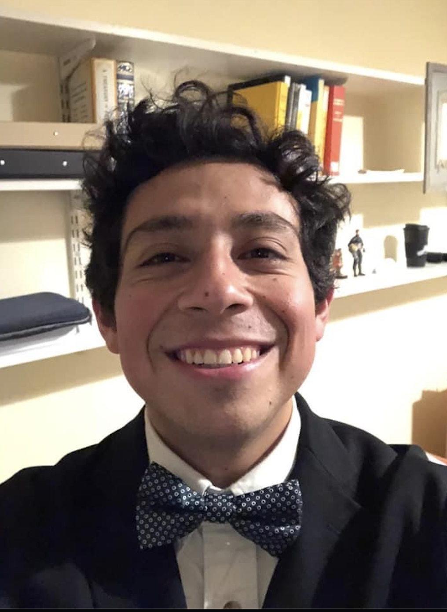
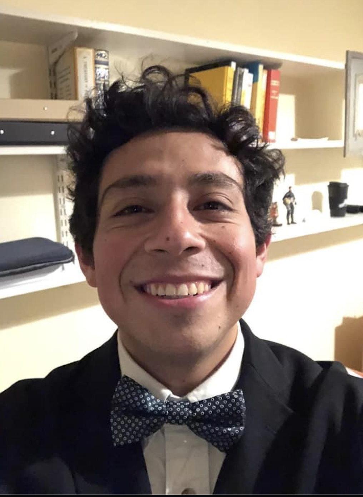

 


About me
I am a second year PhD student at Texas A and M University in the Department of Mathematics.
My research interests lie in geometry. More specifically: low-dimensional topology, geometric analysis, gauge theory and string theory.
Even more specifically, I think of problems in the (many and amazing) Floer theories, gauge theory PDEs (e.g., Yang-Mills, Seiberg-Witten, Hitchin, Kapustin-Witten), homological mirror symmetry, and homotopy theory.
My advisors are Prof. Dean Baskin, Prof. John Etnyre , and Prof. Chris Pope.
Office: Blocker 619
Email: jlopez1234@tamu.edu
Motivation
God is a mathematician of a very high order and He used advanced mathematics in constructing the universe. - Paul Dirac
The scientist does not study nature because it is useful to do so. He studies it because he takes pleasure in it, and he takes pleasure in it because it is beautiful. - Henri Poincare
Math is hard. But you are not alone. - Anonymous
Statement about teaching
One of my goals in life is to make high-level math reachable and understandable to a wider group of people than the one today. I want to teach these ideas in such a way that anyone, willingly, can understand them. It is common to hear that mathematics is very hard, or among the least liked subjects in school. However, this could be due to inadequate teaching, or lack of knowledge about the material. Hence, the history of mathematics can also be changed through teaching. I have been surrounded with academia for the most part of my life. Thus, I am a firm believer that education is a door where students can start pursuing great things, actually enjoying going to class, and regain hope in the things to come.
Education
2019-2020: Mast in Mathematics from Part III University of Cambridge. Wrote a thesis on Atiyah-Singer Index Theorem under the supervision of Dr. Alexei Kovalev
2018-2019: Postbac certificate in Mathematics from Iowa State University
2014-2018: BS degree in Mathematics from University of Texas Rio Grande Valley
2017: Studied abroad at ETH Zurich ETH Zurich. Changed my life
Positions held
Ongoing: Organize Graduate Student Organization seminars, TAMU
Summer 2023: 412 PDEs grader, TAMU
Spring 2023: Directed Reading Program, TAMU
2023: 151 Calculus (with python) TA, TAMU
2022: 150 Precalculus (with python) TA, TAMU
2022: 409 Advanced Calculus grader, TAMU
Spring 2022: Directed Reading Program, TAMU
2021: 602 PDEs grader, TAMU
2021: Teacher for Physics, Precalculus and Calculus, SJA
2021: Graduate teacher assistant, ISU
2020: Math tutor for Learning Center, UTRGV
2020: Resident Assistant for Upward Bound Program, UTRGV
Expository articles
Summer 2021: Principal bundles, Kobayashi and Nomizu Ch. 1,2
2020: Notes in Differential Geometry
2020: Primer on Lefschetz fibrations
Spring 2020: Atiyah-Singer Index Theorem , Master thesis
Sets of notes with exercises on my journey through graduate school. I will be updating these regularly:
Floer theory
Geometric analysis
String theory
Class notes and learning seminars:
Ongoing: Topology and Geometry Working Seminar, TAMU
Fall 2023: Representation theory
Summer 2023: Organized analysis student learning seminar
Fall 2022 - Spring 2023: K-theory and homotopy theory following Atiyah, Barnes-Rotzheim, McCearly and others
Fall 2022-Spring 2023: PDEs I and II following Evans and Lieb-Loss
Fall 2022: String theory, Prof. Katrin Becker
Spring 2022: Differential forms in algebraic topology follow Warner following Bott-Tu
Spring 2022: Morse theory
Spring 2022: Homological mirror symnetry, Prof. Chris Pope
Fall 2021: Hodge theory mini-course following Warner
Fall 2021: Topology from a differentiable viewpoint, Milnor
Fall 2021: Topology
Fall 2021: Real Analysis
Summer 2021: GW/DT invariants , notes from the class by Prof. Sheshmani
Fall 2019: Part III Differential Geometry
Spring 2020: Part III Symplectic Geometry
Fall 2019: Part III Algebraic Topology
Fall 2019: Part III Algebraic Geometry
Spring 2020: Part III Complex Geometry
Problem solving in Math
In my Master's, I was given some interesting problems. I believe is against the University policy to upload them on the internet. But they follow closely the books above. I have solutions to some selected exercises from my time in ISU: ODEs by Perko, PMA by Rudin, Linear algebra by Prof. Hogben, and Intro Algebra by Hungerford. I am pending to upload them.
Also, I will be taking the following Qualyfing exams:Summer 2022: Top/DG Qual. Here exercises and solutions.
Summer 2023: Physics Qual. See the comment below.
Conferences and seminars
PDEs working seminar, TAMU
Harmonic analysis and mathematical physics, TAMU
Summer 2023: Mirror symmetry mini-school, Stony Brook
Taubes secret seminar, online
Gauge theory virtual, online
Western Hemisphere Virtual Symplectic Seminar, online
Western Hemisphere Colloquium on Geometry and Physics, online
Symplectic Zoominar, online
Topology seminar and microlocal analysis seminar, Tsinghua online
Spring 2023: Geometry Fest, Princeton
Spring 2023: Mini-workshop with Peter Hintz, UNC
Spring 2023: AMS sectional meeting, Georgia Tech
Spring 2023: STCT II, Texas State
October 2022: Gauge theory, low dimensional topology workshop, and Floer homotopy theory workshop, MSRI
Summer 2022 (part 1): Hiro's notes for spectra, which are super amazing
Summer 2022 (part 2): Floer homotopy theory notes at UBC, exercises and some solutions
2022: Georgia Tech low-dimensional topology conference
2021: SIAM conference
Fall 2021: STCT I, Texas State
2021: Advances in Symplectic Topology
2020: AGITTOC
2019: MSRI H-Principle
2019: PCMI
2018: SAMMS at OSU
2018: Field of Dreams
2018: MSRI Topology and dynamical systems
Talks
Fall 2022: Graduate Student Seminar at TAMU
Fall 2021: Graduate Student Seminar at TAMU
2021: Fitchburg State University talk promoting math
2020: Kuranishi structures, AGITTOC
2020: Stable curves, AGITTOC
Like Prof. Alessandro Carlotto says, math is not a spectator sport. So in order to be better at math I need to do math. The following books and notes are the ones I studied the most during graduate school. Of course, I continue studying them. I learned from the value of books from Prof. Guangbo Xu.
These are my favorite math books:
Salamon SW invariants
Donaldson-Kronheimer
Salamon-McDuff
Evans
Scorpan
Mirror symmetry (Clay math)
Evolution equations (Clay math)
Buhler-Salamon
Lieb-Loss
Useful resources
Hiro Lee Tanaka
Qiangru Kuang
Terence Tao
Jonny Evans
Alexander Ritter
Denis Auroux
Richard Thomas
Keith Conrad
Ravi Vakil
Laura Fredrickson
Jason Lotay
Andras Gathmann
Arun Debray
Dexter Chua
Paul Minter
3Blue1Brown
Differential geometry videos
Measure theory videos
Khan Academy
Hobbies
British literature
Love to go out and eat with family
Hang out with friends
Play soccer
Art museums: After all, I painted for 12 years of my life
Music: guitar, bass, classics, classical music, 80s rock, jazz
Go on long walks
Hiking, trials
Meet new people
HP, LOTR Narnia, Marvel, The Office, Parks and Rec, boardgames, etc.. Yes, I am a big nerd